Le Contexte & L'Objectif
Le Projet EEG101
L'électroencéphalographie (EEG) est un outil essentiel en neurosciences, mais ses pratiques manquent de standardisation éthique et méthodologique. Dans le cadre du projet européen EEG101, nos clients ont rédigé un "Community Framework" invitant les chercheurs à s'engager sur 3 grands axes.
Notre Mission
Créer un espace virtuel sur WorkAdventure pour sensibiliser la communauté et les inviter à partager au Community Framework EEG101. L'enjeu cognitique est le suivant : Comment adapter une plateforme de jeu à un public professionnel scientifique non forcément initié aux Jeux vidéos et plateformes interactives ?
Les 3 Piliers du Framework
- 🔬 Validité scientifique : Intégrité, robustesse et reproductibilité.
- 🌍 Démocratisation : Accessibilité et inclusion des savoirs.
- 🌱 Responsabilité : Impact socio-environnemental et éthique.
L'Organisation
Afin d'assurer le bon déroulement du projet, nous avons établi dès le début un planning prévisionnel basé sur les différents livrables attendus par les clients. Cette organisation nous a permis de répartir les tâches au fil de l'année, de fixer des objectifs intermédiaires et de suivre l'avancement du projet de manière progressive.
Planning Prévisionnel

Ce planning a été construit en tenant compte des différentes phases du projet : découverte des concepts et des outils, conception du parcours scénarisé, développement dans l'environnement WorkAdventure, puis déploiement et accompagnement des utilisateurs lors des ateliers.
Planning Réel

Le planning réel met en évidence une organisation plus détaillée avec l'ajout d'activités complémentaires telles que les réunions régulières avec les clients and le tuteur, la conception du poster ou encore les phases de communication et de coordination (CCU). Par exemple, l'implémentation du parcours de jeu a débuté plus tôt que prévu, dès la fin du mois de décembre au lieu de février, afin d'anticiper certaines difficultés techniques. Cette anticipation a notamment permis de réévaluer l'utilisation de Tiled, dont la prise en main et l'intégration se sont révélées trop coûteuses au regard du temps disponible. À l'inverse, la phase de conception du plan de jeu a commencé plus tard que prévu, en décembre au lieu de novembre, et s'est prolongée afin d'affiner le scénario et les mécaniques du parcours.
Répartition du travail :
Nous avons décidé de répartir le travail en 2 groupes : Charline et Josépha s'occupent marjoritairement des mini-jeux et Lucaina et Louna de la map dans WorkAdventure.
Conception Centrée Utilisateur (CCU)
Lors du 6 novembre, lors de la conférence de lancement du projet EEG101, nous avons observé qu'une dizaine de scientifiques se sont perdus ou n'ont pas réussi à s'adapter à l'environnement. Pour répondre à la désorientation observée, nous avons mené des tests utilisateurs rigoureux (protocole d'observation, pensée à voix haute, entretiens) auprès de profils représentatifs (ex: enseignants-chercheurs).
1. Problèmes Identifiés
- Peur de l'erreur : Crainte de cliquer au mauvais endroit ou d'interagir par erreur dans un contexte professionnel.
- Problème d'accessibilité : Difficulté à accéder aux différents items/objets dans le jeu.
- Désorientation : Manque d'une vue globale ("map") et d'un chemin clair pour naviguer.
2. Entretien & Faisabilité
Nous avons rencontré le créateur de WorkAdventure (Greg) pour explorer les limites techniques de l'outil et valider nos idées de création (gestion des PNJ, silent zones, pop-ups).
3. Solutions Apportées
- Proposition de Créer une Antichambre / Tutoriel isolée pour tester les commandes sans pression.
- Passage d'une carte en "Archipel" à une Map "Hackaton", beaucoup plus dirigiste.
- Utilisation de Genially pour des mini-jeux clairs et encapsulés.
Le Jeu Final
Notre carte structure l'apprentissage en plusieurs étapes claires :
- L'Antichambre : Espace d'apparition avec prise en main des contrôles avec des messages d'information.
- L'Agora : Zone centrale ("General meeting room") pour les conférences orales.
- Les 6 salles de Jeux : Chaque jeu illustre un pilier du Community Framework notamment sur "Rendre les données FAIR", la démocratisation des données et la Responsabilité Scientifique socio-environnementale présentés via Genially ou Site Web.
- La Zone d'entrée/Sortie : Le but ultime du parcours, où le chercheur peut découvrir et signer le Community Framework.
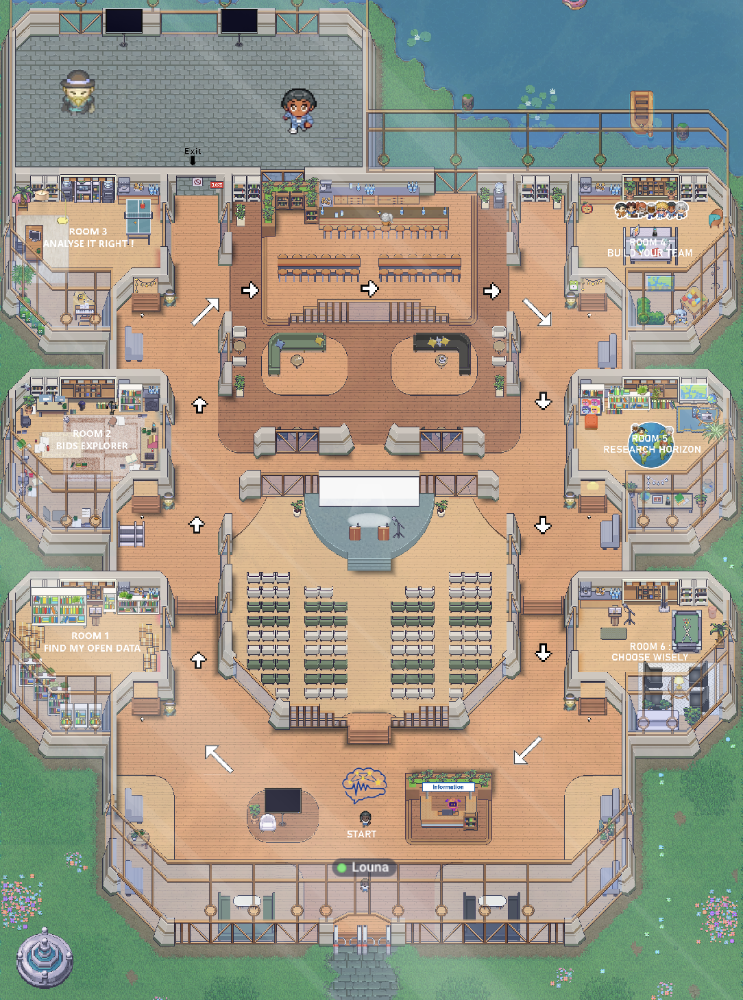
Aperçu de la map WorkAdventure "Hackaton"
L'Antichambre
Comment fonctionne l'Antichambre ?
Après avoir effectué le tutoriel proposé par WorkAdventure :
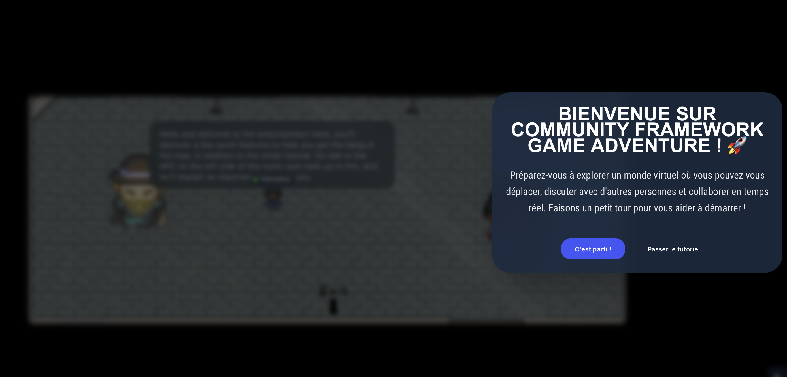
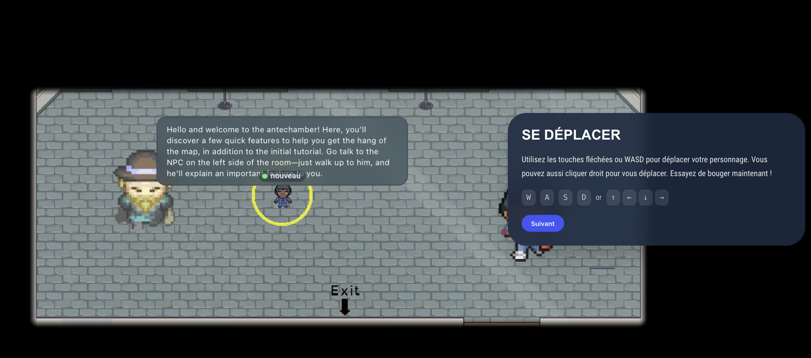
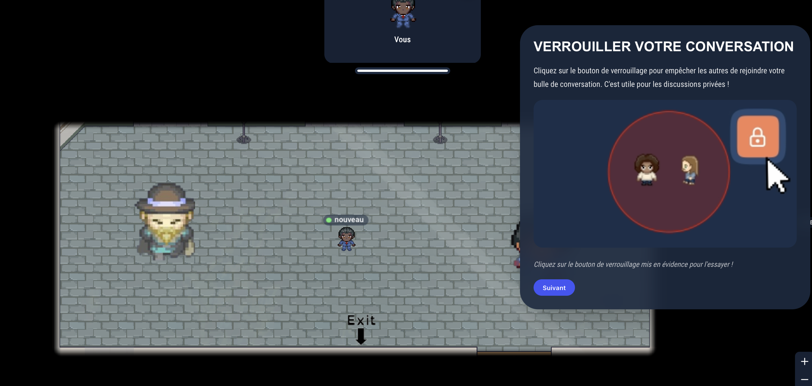
(La langue du contenu change en fonction de l'endroit où se trouve l'utilisateur, elle sera en général en anglais)Le tutoriel de l'Antichambre commence avec un texte explicatif (c'est une zone silencieuse, nous ne pouvons pas communiquer dans cette pièce afin de ne pas "interagir par erreur") :
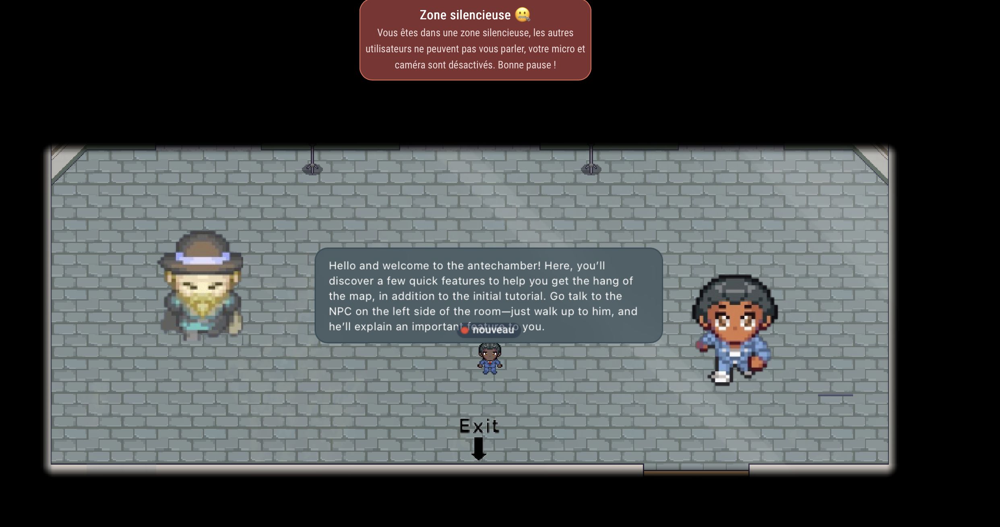
En réalisant ce qu'on nous demande de faire, on obtient :
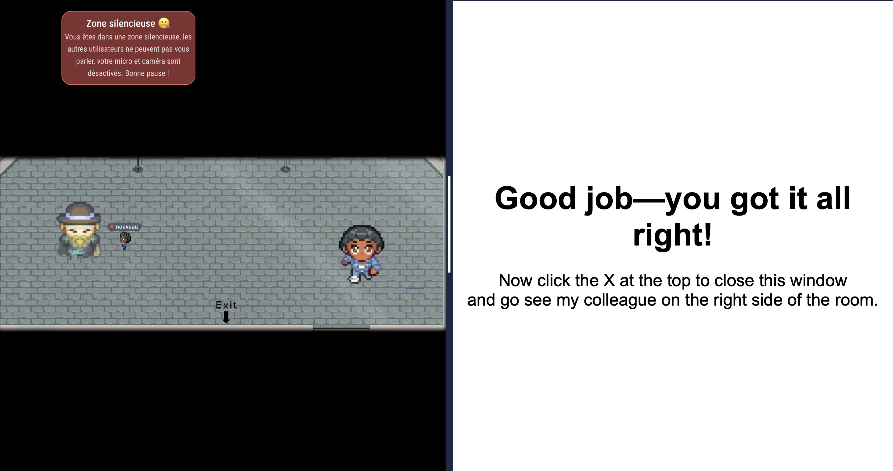
Puis après avoir parlé au 2ème PNJ, on peut enfin se rendre à la sortie
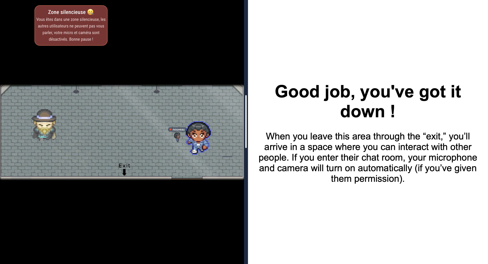
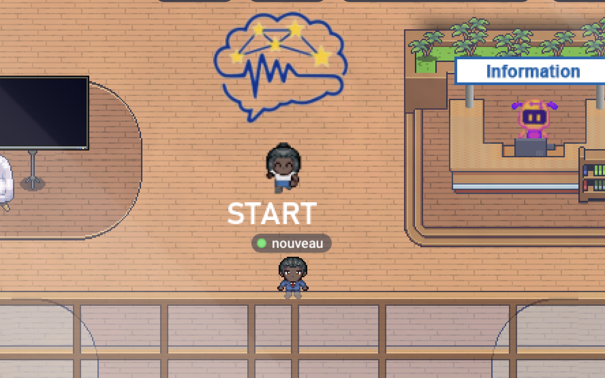
Focus sur les 6 Salles de Jeux
Cliquez sur l'image d'une salle pour découvrir les détails et objectifs du mini-jeu associé.
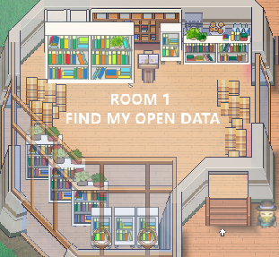
Salle 1 : Find my open data
🔬 Validité Scientifique · Données FAIR
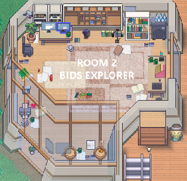
Salle 2 : BIDS Explorer
🔬 Validité scientifique · Données FAIR (I+R)
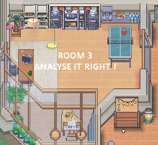
Salle 3 : Analyse it right
🔬 Validité scientifique · Intégrité des données
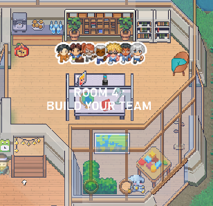
Salle 4 : Build your team
🌍 Démocratisation · Inclusion des savoirs
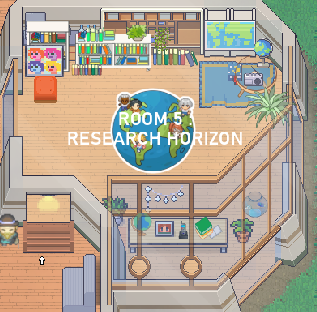
Salle 5 : Research horizon
🌍 Démocratisation · Accessibilité des savoirs
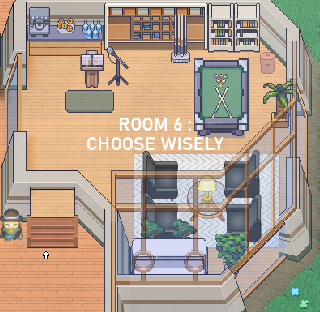
Salle 6 : Choose wisely
🌱 Responsabilité · Éthique socio-environnementale


Outils & Contraintes
- WorkAdventure : Moteur 2D imposant des images légères et limitant les utilisateurs simultanés (15 max hors événement).
- Genially for Education : Outil de création de contenu interactif intégré via iframes dans la map.
- Sites internet : Conception et développement de pages web pour l'implémentation des jeux et présenter le projet.
Engagement DD&RS
Ce projet s'inscrit pleinement dans une démarche de Responsabilité Sociétale et Environnementale :
- Écologie : Espace de conférence virtuel permettant de limiter les déplacements internationaux en avion dans le cadre du Community Framework qui lui même incite à prendre des Responsabilité Socio-environnementales.
- Social : Outil en libre accès favorisant la démocratisation des connaissances scientifiques.
- Éthique : Promotion de la transparence et de la reproductibilité des données (Validité scientifique, données FAIR).
Matrice des Risques
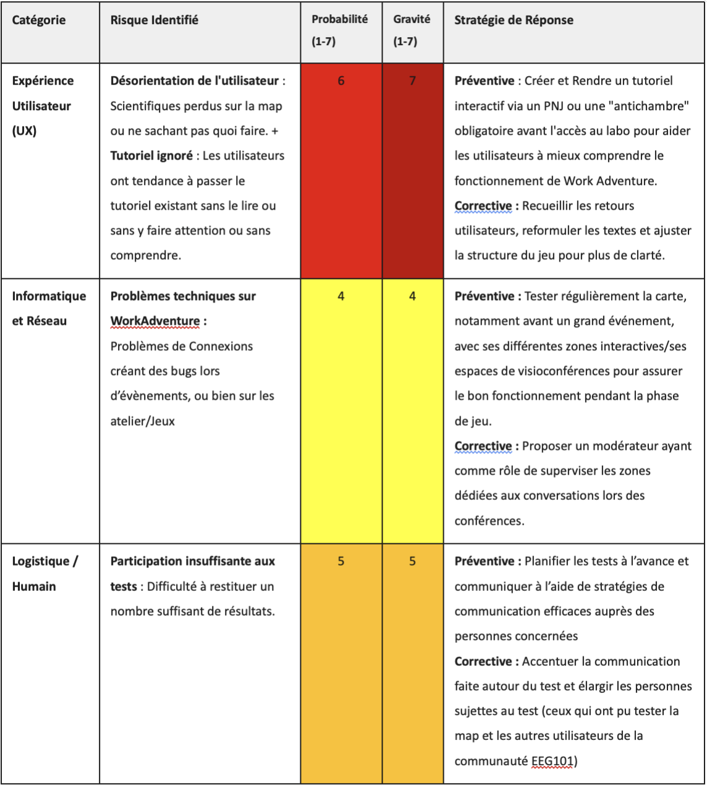
L'Équipe de Projet
Étudiant et Étudiantes en 1ère année à l'ENSC - Bordeaux INP
Josépha Pfleger
jpfleger@ensc.frLucaïna Rakotomalala
lrakotomalal001@ensc.fr